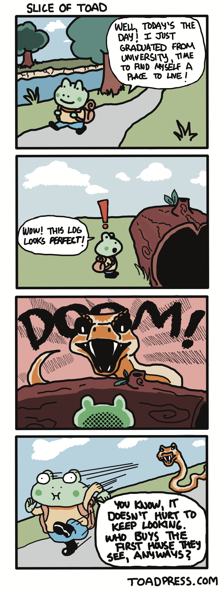

|
toad press
tariq's online (almost) daily press
a small personal site that shares human vibes. 07-28-2026-TUE version
|

Tuesday's Entry 07-28-2026We are always told to wash our fruits and vegetables before eating them. The reason for this is clear: remove the germs, prevent sickness, enjoy your produce. Some people, however, always skip this step. I had a good friend many years ago who never washed their fruits or veggies. She said it didn’t make much difference and she never fell ill from not washing an apple. I found this quite surprising. “What about potatoes? Mushrooms?” I remember she shrugged and said she would ‘dust them off.’ To each their own. Even though we are always told to wash our produce, I think everyone has at least once or twice in their life skipped this step. This made me wonder, is there any other benefit to the ritual of washing our food other than the fact that we were always told to do it? Most of us are fully removed from the work of gardening or farming and couldn’t answer questions related to which seasons certain fruits and vegetables grow, the climates they desire, how they need to be planted, or when they need to be harvested. Most of us simply visit a grocery store, knock on a hard shelled melon for a resonant sound or sniff an orange for a familiar scent and decide to buy or not. The nature of it all has been removed. This got me thinking. Even though we may not grow the fruits and vegetables (especially if we live in cities or small rental units), washing them gives us the opportunity to have a separate connection with the crops that is different from the two main connections we already have set in place: purchasing and eating. The third connection is that of handling, inspecting, cleaning, and drying. Watching water make cucumbers glisten and strawberries burn a brighter red. Soaking grapes and playfully plucking one out of cold water and handing it to the nearest companion. Searching for wayward specks of dirt on a potato and scrubbing it away. The third connection is nature. So, next time you bring your beautiful produce home, in those pseudo-sterile plastic bags, and you hesitate and waver back and forth regarding washing or not, think about the nature behind it. Think about the delight behind slowing down and cleaning the fruits that grew from small seeds in warm soil and reached for the blue sky, dreaming of the joy they could give someone as special as you. I think if I can think about more things the way I think about this, I could be much more present in the mundane parts of life. That’s what I’d like to aim for! - Tariq |


|
Monday's Entry 07-27-2026Life within life. That is the phrase that kept turning over in my head the last few days after noticing an interesting development in the soil of our monstera house plant. Let’s dive into it. When I married my wife, she had a small monstera, given to her by a friend moving out of their apartment who had little luck at keeping it alive, and was working diligently on returning it to proper health. Not only did she get the plant back on track, she was helping it thrive! We used to joke that the plant was a reflection of her true self - when it was growing a new leaf, my wife was growing as well, when its leaves were drooping and in need of something specific, so was she. I am not quite sure if this could be qualified in any way other than the fact that it was represented in the movie “E.T. The Extra Terrestrial” between the alien and a sunflower, but it became a fun truth shared between the two of us. And now, since we brought them up with that last reference - on to aliens. A few days ago, I went to water our monstera (which now lives in a much larger pot than several years ago, with thirteen leaves and two new ones on the way) but stopped myself in sudden amazement. There was a plump, yellow stalk protruding from the soil. It was rounded at the top with knob-like ridges at the base. I took a step back and asked my wife, with mustered courage, “um…what is that?” We both stared at what looked like an alien finger for a good few seconds, then stared at each other and began to quietly freak out. A quick internet search calmed us down. Leucocoprinus birnbaumii is what the organism went by, formally, or ‘flowerpot parasol’ if you’re on a first name basis. Apparently it was a sign of the burgeoning mycelium fungal network within the monstera pot, brought to the surface in the form of a flowering mushroom due to moist soil conditions most likely. (I made a mental note to push the watering out to three or four weeks instead of every two.) We were reassured that this would not harm the plant and that it was only toxic if ingested, so we decided to leave it in order to watch the life cycle. The next morning, the rounded top was fully open - a parasol! Ah! Wonderfully named. Underneath were rows of tiny gills and from these flowed many, many microscopic spores into the surrounding soil. Later that day, the flower was curled up, hunched over, and lying on the soil. Just as quickly as it came to the surface, it served its purpose and began its process of disappearance. The spores were delivered and I’m sure we may see more of these strange, alien, yellow parasols - life within life. For years we watched as our little monstera grew larger notched leaves, and stretched its stalks upward and outward, and flung its aerial roots in every direction. For years my wife meticulously researched proper soil conditions and potting techniques. Our life carried on, day after day, and so did this plant’s. What we didn’t realize, however, was that there was even more life growing under the surface. The fungal mycelium network is such a bizarre and amazing phenomenon. It is branched in more than a hundred different ways throughout the soil and offers a highway for exchange of returned nutrients from organic matter breakdown for sugars produced by the plant. An elaborate framework, completely hidden from plain site. All this time, while we admired the growth of new leaves, slowly unfurling in shades of bright green, we didn’t even know about all of the growth happening deep within the pot. Within the life we have come to monitor and admire, was yet another life that wasn’t asking for any admiration. Or, maybe, it was. Maybe that little yellow umbrella that shocked and then delighted us for a span of less than 48 hours was the fungus’ way of saying, “hello world! I am here! And I matter!” And maybe…that isn’t the case. Maybe it was just the next step in its mission to continue growing. It’s hard to tell which possibility is the truth, but for now I will tip my hat and nod to the impressive interwoven highway of mycelium - thank you for all that you’ve done to help our little monstera (which is now, admittedly, our big monstera). How clever and hidden you have been, after all this time. Remind me never to play hide and seek with fungus. Thank you for visiting Toad Press, here’s to a great week with good human vibes for all of us. - Tariq |
|
|
Sunday's Entry 07-26-2026 - Tariq |